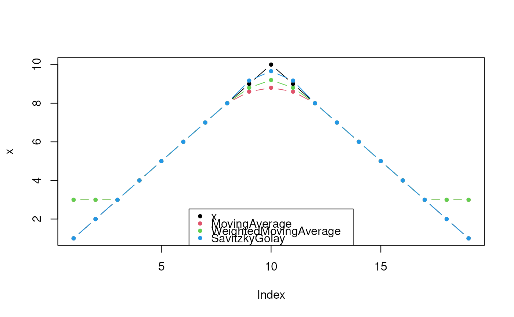

This function smoothes a numeric vector.
smooth(x, cf) coefMA(hws) coefWMA(hws) coefSG(hws, k = 3L)
| x |
|
|---|---|
| cf |
|
| hws |
|
| k |
|
smooth: A numeric of the same length as x.
coefMA: A matrix with coefficients for a simple moving average.
coefWMA: A matrix with coefficients for a weighted moving average.
coefSG: A matrix with Savitzky-Golay-Filter coefficients.
For the Savitzky-Golay-Filter the hws should be smaller than
FWHM of the peaks (full width at half maximum; please find details in
Bromba and Ziegler 1981).
In general the hws for the (weighted) moving average (coefMA/coefWMA)
has to bemuch smaller than for the Savitzky-Golay-Filter to conserve the
peak shape.
coefMA: Simple Moving Average
This function calculates the coefficients for a simple moving average.
coefWMA: Weighted Moving Average
This function calculates the coefficients for a weighted moving average with
weights depending on the distance from the center calculated as
1/2^abs(-hws:hws) with the sum of all weigths normalized to 1.
coefSG: Savitzky-Golay-Filter
This function calculates the Savitzky-Golay-Coefficients. The additional
argument k controls the order of the used polynomial. If k is set to zero
it yield a simple moving average.
The hws depends on the used method ((weighted) moving
average/Savitzky-Golay).
A. Savitzky and M. J. Golay. 1964. Smoothing and differentiation of data by simplified least squares procedures. Analytical chemistry, 36(8), 1627-1639.
M. U. Bromba and H. Ziegler. 1981. Application hints for Savitzky-Golay digital smoothing filters. Analytical Chemistry, 53(11), 1583-1586.
Implementation based on: Steinier, J., Termonia, Y., & Deltour, J. (1972). Comments on Smoothing and differentiation of data by simplified least square procedure. Analytical Chemistry, 44(11), 1906-1909.
Other noise estimation and smoothing functions:
noise()
cf <- list(MovingAverage = coefMA(2), WeightedMovingAverage = coefWMA(2), SavitzkyGolay = coefSG(2)) for (i in seq_along(cf)) { lines(smooth(x, cf[[i]]), col = i + 1, pch = 20, type = "b") }